Ce que fait l'application
Relever en une photo
L'index est lu automatiquement, sur le téléphone, même sans réseau. Une lecture douteuse est signalée, jamais enregistrée en douce.
Prévoir son année
Consommation prévue jusqu'au prochain relevé annuel, avec une fourchette et le coût estimé d'après vos tarifs.
Comparer à climat égal
Grâce aux degrés-jours, un hiver doux ne passe plus pour une économie, et l'effet d'une isolation se voit.
Vos données chez vous
Pas de compte, pas de serveur, pas de publicité. Export Excel vers Google Drive ou ailleurs pour vos sauvegardes.
Aperçu
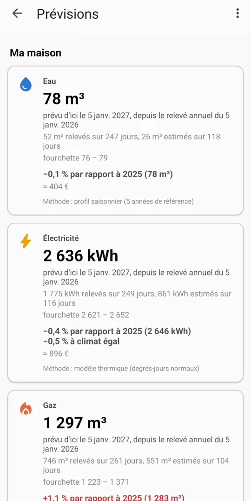
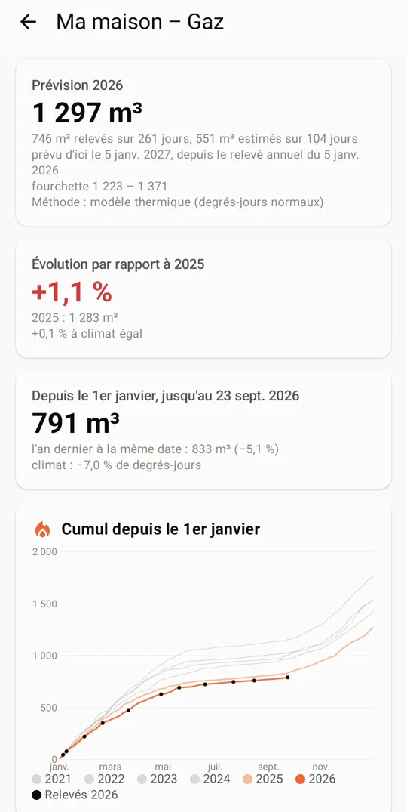
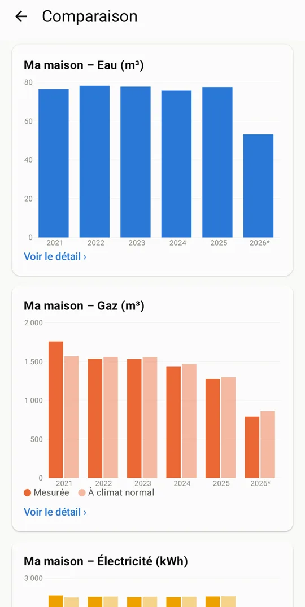
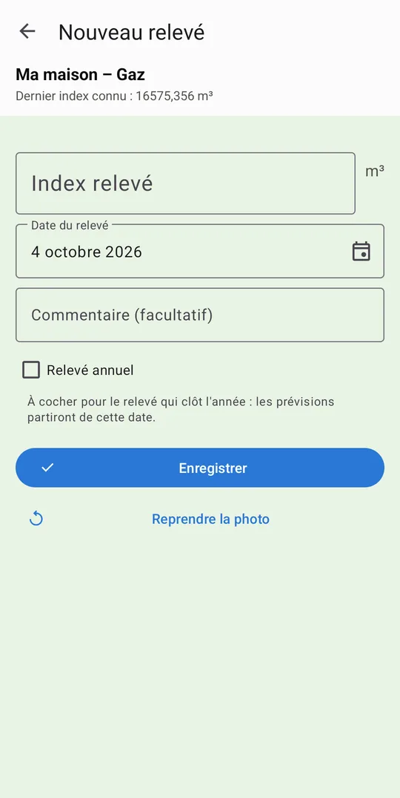
Télécharger
Google PlayMises à jour automatiques.
Google PlayAPK completAvec lecture automatique de l'index.
suivi-compteurs.apkAPK libreSans aucun composant propriétaire : l'index se saisit à la main.
suivi-compteurs-libre.apkSoutenir le projet
L'application est gratuite et le restera. Si elle vous est utile, un don libre aide à la faire vivre.
Don unique par carte ou PayPal sur Ko-fi ; soutien régulier sur Liberapay.
What the app does
Readings in one photo
The index is recognised automatically, on the phone, even offline. A doubtful reading is flagged, never saved silently.
Forecast your year
Expected consumption up to your next annual reading, with a range and an estimated cost from your tariffs.
Compare at equal weather
Thanks to degree days, a mild winter no longer looks like a saving, and the effect of insulation shows.
Your data stays yours
No account, no server, no ads. Excel export to Google Drive or elsewhere for your backups.
Preview
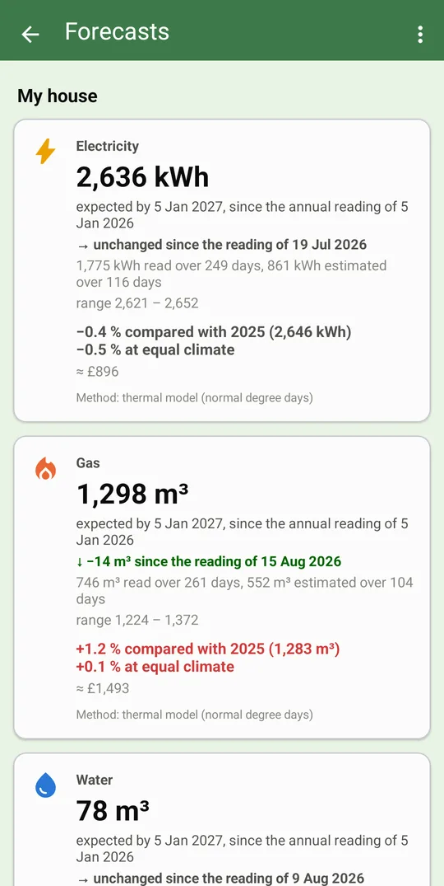
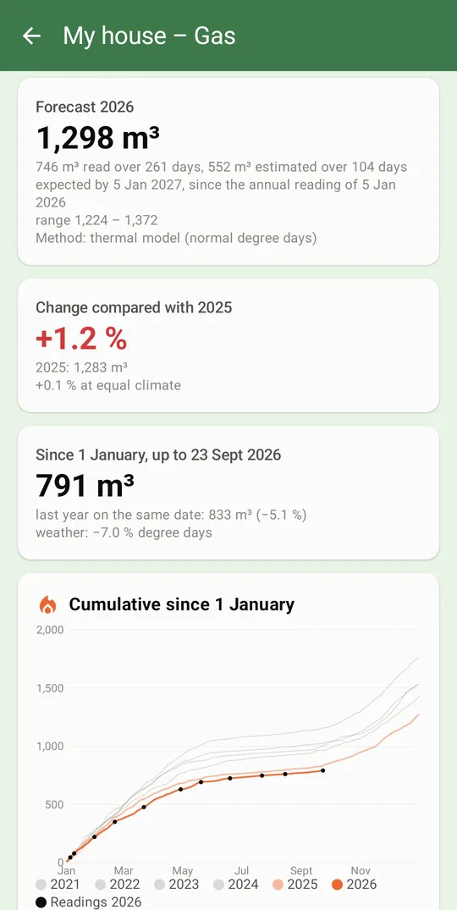
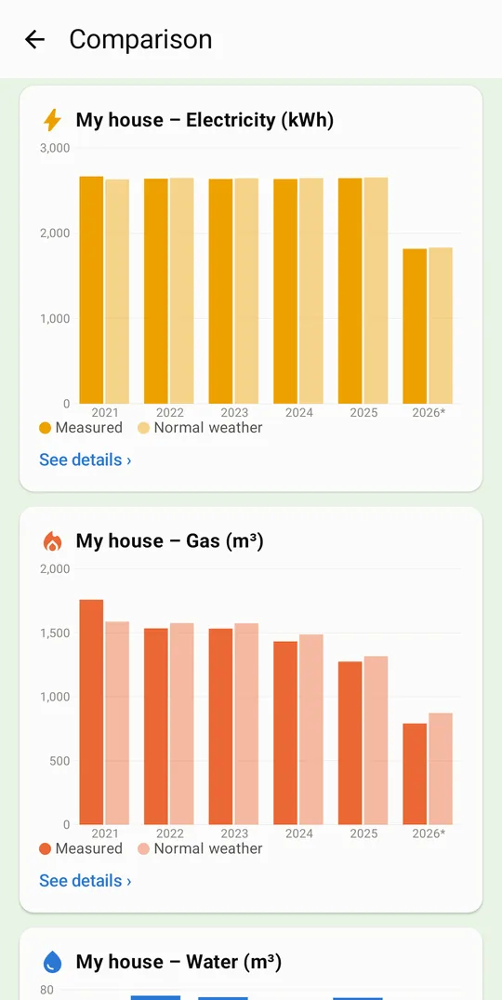
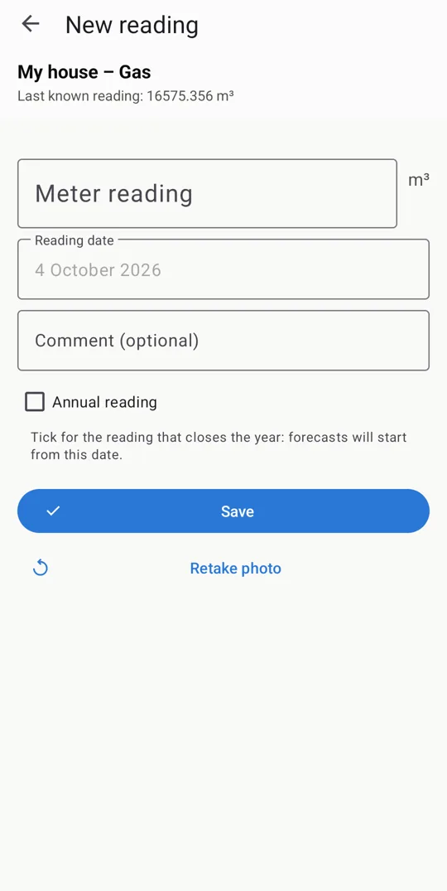
Download
Google PlayAutomatic updates.
Google PlayFull APKWith automatic reading of the index.
suivi-compteurs.apkFree APKNo proprietary component at all: the index is typed by hand.
suivi-compteurs-libre.apkSupport the project
The app is free and will stay free. If you find it useful, a donation of any amount helps keep it going.
One-time donation by card or PayPal on Ko-fi; regular support on Liberapay.
Wat de app doet
Aflezen met één foto
De stand wordt automatisch gelezen, op de telefoon, ook zonder netwerk. Een twijfelachtige lezing wordt gemeld, nooit stilletjes opgeslagen.
Je jaar voorspellen
Verwacht verbruik tot de volgende jaarlijkse meterstand, met een marge en de geschatte kosten volgens je tarieven.
Vergelijken bij gelijk klimaat
Dankzij graaddagen lijkt een zachte winter niet langer een besparing, en wordt het effect van isolatie zichtbaar.
Je gegevens blijven bij jou
Geen account, geen server, geen reclame. Excel-export naar Google Drive of elders voor je back-ups.
Voorbeeld
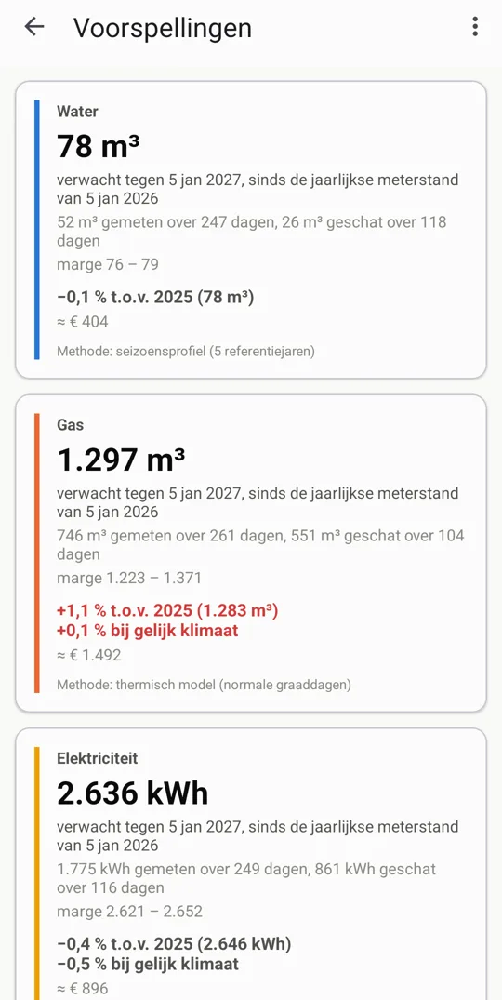
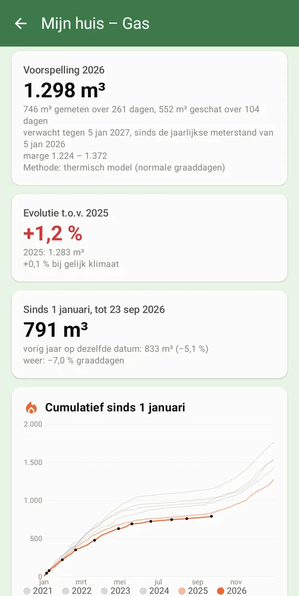
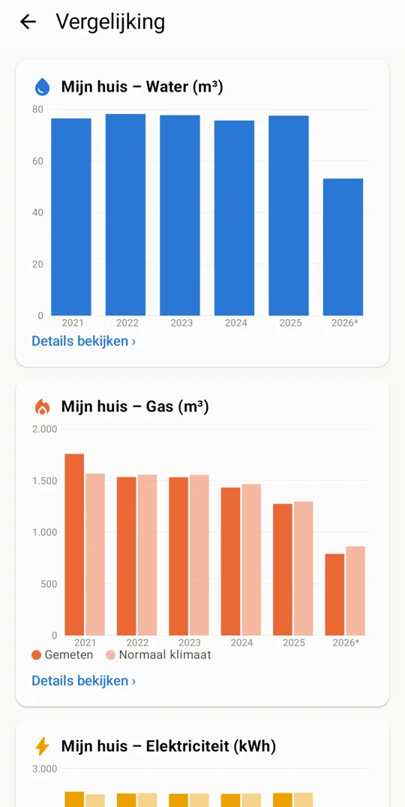
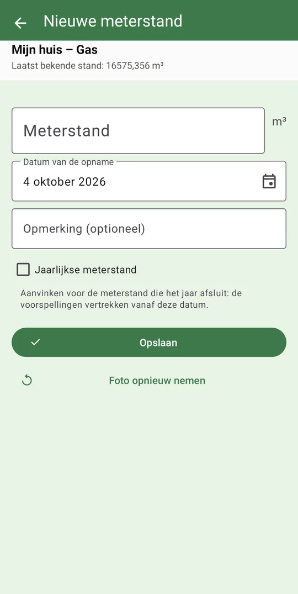
Downloaden
Google PlayAutomatische updates.
Google PlayVolledige APKMet automatisch lezen van de meterstand.
suivi-compteurs.apkVrije APKZonder enig propriëtair onderdeel: de stand wordt met de hand ingevoerd.
suivi-compteurs-libre.apkHet project steunen
De app is gratis en blijft gratis. Vind je ze nuttig, dan helpt een vrije gift om ze levend te houden.
Eenmalige gift met kaart of PayPal via Ko-fi; regelmatige steun via Liberapay.